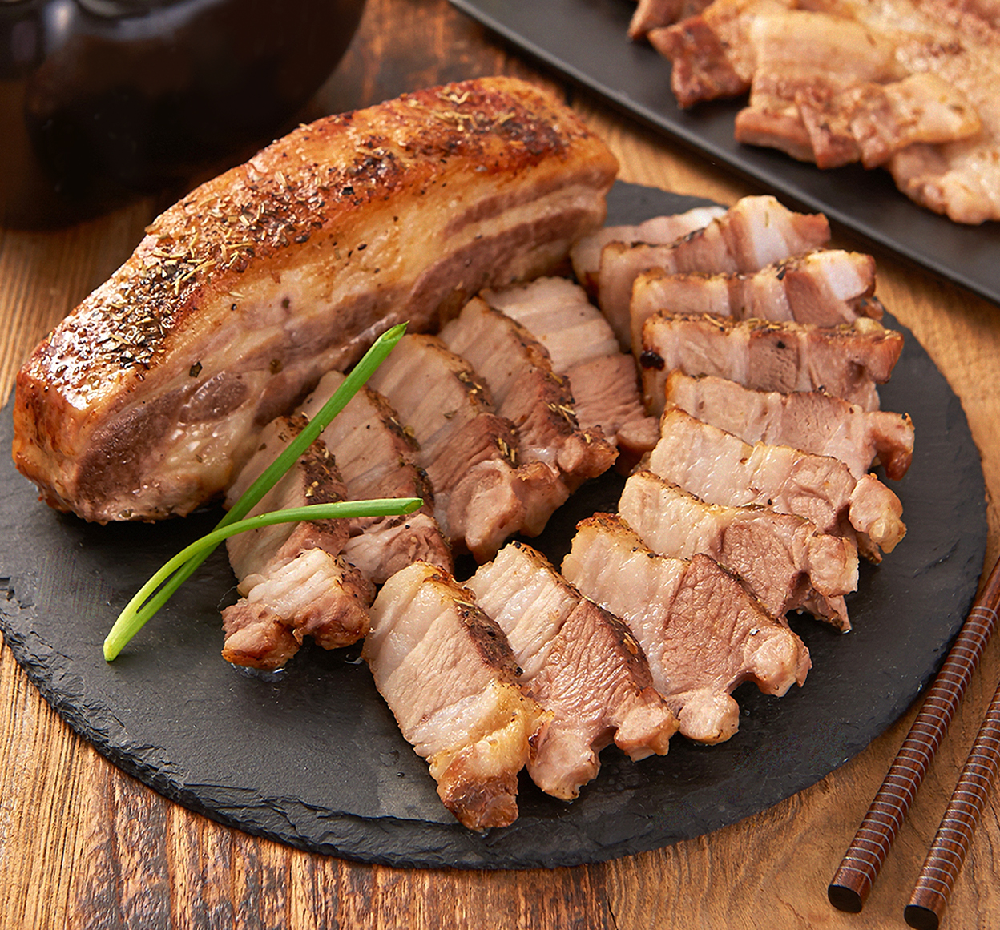
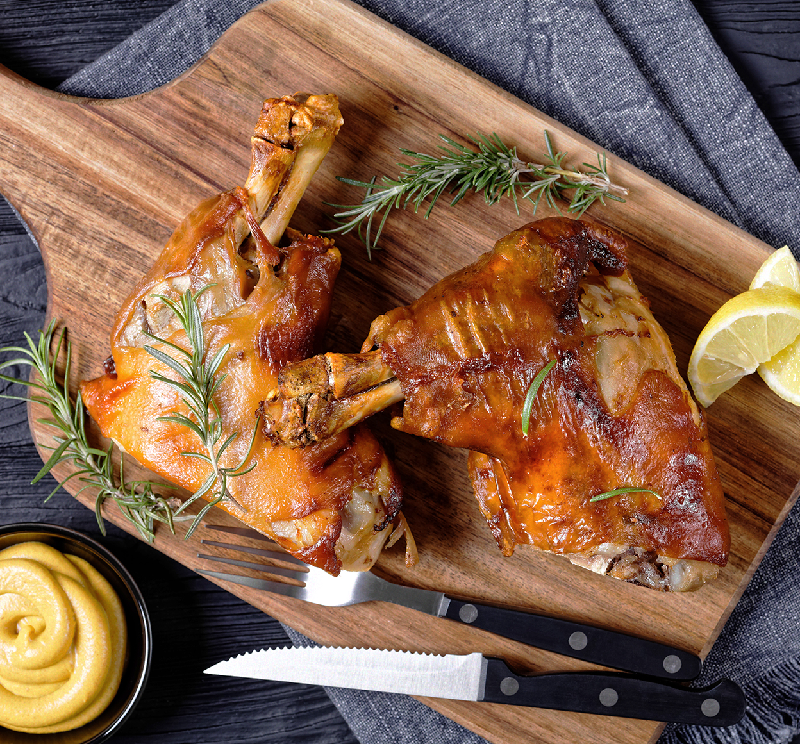
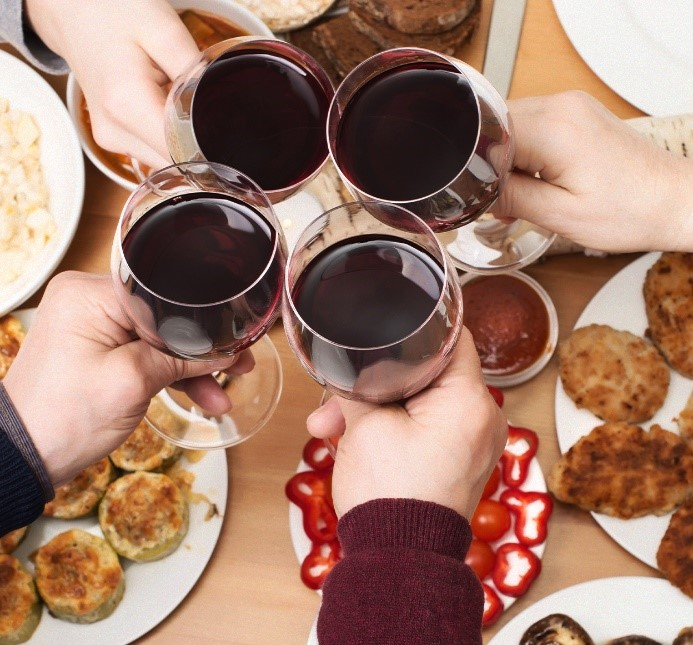

주방와인셀러


보다 더 스마트한 일상
LG ThinQ의 시작

보다 더 스마트한 일상, LG ThinQ
씽큐는 사람과 가전을 AI 기술로 연결하여 더 편리하고 놀라운 일상을 만드는 LG전자의 스마트 홈 플랫폼입니다.
* 본 콘텐츠는 ThinQ 앱의 콘텐츠입니다.
프랑스어로 '결혼'이라는 뜻을 가진 단어인 '마리아주'는 와인과 음식의 궁합을 말하는데요. 오늘은 와인과 한식의 특별한 마리아주를 소개할게요.

삼겹살에 잘 어울리는 레드 와인
기름기가 많은 삼겹살에는 레드 와인이 잘 어울려요. 레드 와인의 타닌 성분이 삼겹살의 지방을 잡아주고 입안을 깔끔하게 만들어주기 때문인데요. 특히 미국 캘리포니아의 블렌딩 레드 와인에서부터 까바르네 소비뇽, 시라, 말벡 등 적절한 산도와 타닌감을 지닌 와인이 잘 어울려요.
· 부드러운 꽃등심 구이에는? 타닌이 강하지 않고 섬세한 맛을 지닌 부르고뉴 와인을 추천!
· 쫄깃 달콤한 갈비찜에는? 풍부한 타닌과 부드러운 산도, 아로마가 풍부한 호주산 또는 미국산 레드 와인을 추천!

쫀득한 족발에는 화이트 와인
독일에서는 우리나라의 족발과 유사한 음식인 ‘슈바이네학센’을 먹을 때 화이트 와인을 곁들이는데요. 이와 비슷하게 우리나라의 족발 또한 화이트 와인과 잘 어울려요. 특히 스파이시한 풍미와 향긋한 과일 향, 적당한 산도의 화이트 와인과 함께 먹으면 고소함이 배가 된답니다.
· 단짠단짠 잡채에는? 슈넹 블랑이나 드라이한 리슬링, 오크 숙성하지 않은 샤르도네와 같은 향기로운 화이트 와인을 추천!
· 새콤달콤 탕수육에는? 독일산 리슬링으로 만든 단맛이 풍부하면서 부드러운 산도를 지닌 화이트 와인을 추천!
· 달콤한 한과나 약식에는? 곡물에 어울리는 부드러운 향의 게뷔르츠트라미너 품종의 스위트 와인을 추천!

한식과 와인, 나만의 마리아주 찾기
마리아주는 공식이 아니기 때문에 입맛에 따라 다를 수 있어요. 중요한 건 경험! 오늘 저녁에는 한식에 와인 한 잔으로 나만의 특별한 마리아주를 찾아보는 건 어떨까요?


LG ThinQ
ThinQ 하나로 더 좋아지는 일상
일상을 더 편하고 스마트하게 만들어주는 씽큐 앱을 지금 바로 만나보세요.
- #와인셀러
- #와인
- #와인상식
- #마리아주
- #음식궁합
출처 및 고지사항
* 참고자료
- 느긋한 애프터눈 티 코스.. 빙수는 마지막에[와인쟁이 이상황의 오늘 뭐 먹지?], 동아일보[웹사이트]. (2021년 7월 28일) >
이영배, <우리 음식에 어울리는 와인 페어링 탐구>, ≪웅힙경영리뷰≫, Vol.30 No.-[2021], 2021년, p43-44
이기태(2009), ≪와인 상식 사전≫, 길벗, p64-66.
- [비즈니스 와인 매너] 전통 후식과 디저트 와인, 매거진 한경 [웹사이트]. (2010년 10월 8일) >